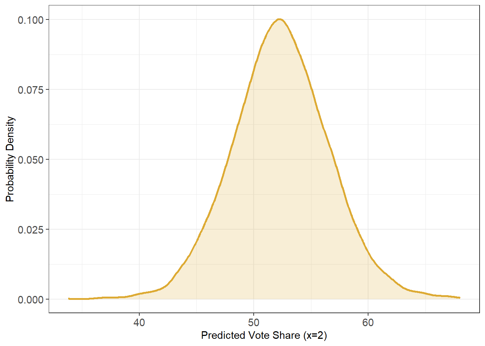

This is just a bit of fun, mostly for myself. In my day-to-day as a data scientist, I don’t get to use Bayesian statistics as much as I would like. In my role, a lot of the tools we use are things like boosted tree models, anomaly detection ensembles, and other less inferential models. That’s not to say I don’t think Bayesian methods can be used at my job, but there is definitely a different toolset involved.
I do a bit of side work (some for money, others just for fun) where I really do prefer to use Bayesian statistics. I’ve always liked the flexibility it allows in contrast to frequentist methods. In addition, I find it invaluable for stuff like psychometrics (e.g. IRT models) and survey analysis. I have to admit, I am a bit rusty with some of the foundations, and I’ve decided to make an abbreviated run through one of my favorite recent stats books: “Regression and Other Stories”. The previous book that was absolutely invaluable for me in grad school was the 2007 “Data Analysis Using Regression and Multilevel/Hierarchical Models”. So for personal growth and fun, I’m going to work on a few interesting examples from this more recent book, starting from the beginning of the book all the way through the end - tossing in a bit of my own opinions on this.
Chapter 8: Fitting Regression Models
Before working on anything too complicated, I think it is refreshing to start with a very simple regression problem. I know this already Chapter 8, but the first several chapters of the book are mostly a very basic intro into Bayesian statistics, data analysis, and some other more standard stuff. I’m choosing to skip ahead a bit. Chapter 8 starts with an introduction to a very simple bivariate regression using an interesting dataset from Douglas Hibbs’ fundementals-based election forecasting model (oddly appropriate, given when I am writing this):
The Hibbs “Bread and Peace” Model
The data below is part of Douglas Hibb’s “Bread and Peace” model of U.S. elections. The data below show the proportion of the 2-party vote share for the incumbent party against a measure of personal income growth during that party’s tenure. As seen in the plot, there appears to be a fairly strong relationship between the economic status under the incumbent party and their share of the 2 party vote.
plot1.1<-ggplot(election) +geom_point(aes(x = growth, y = vote), size =2, shape =22, fill ='#004488', color ='#004488') +labs(x ="Growth in Personal Income", y ="Incumbent vote share") +theme_bw() +theme(axis.text =element_text(size =11))plot1.1
Growth in personal income is associated with higher vote shares for the incumbent party
Code
plot1.2<-ggplot(election) +geom_text(aes(x = growth, y = vote, label = year), size =3.5, fontface ='bold', color ='#004488') +labs(x ="Growth in Personal Income", y ="Incumbent vote share") +theme_bw() +theme(axis.text =element_text(size =11))plot1.2
The 1980 election saw Jimmy Carter lose decsively to Ronald Regan amid a floundering economy.
Given this data we, therefore, have the simple regression equation:
\[y = \beta_0 + \beta_{1}income + \epsilon\]
Where the expected two party vote share \(y\) is assumed to be a function of the change in personal income growth \(\beta_1\) plus unmeasured residual error \(\epsilon\). So far this isn’t any different than your bog-standard lm(y~x) type model. The difference is how a Bayesian model handles the model parameters. In short, while a frequentist model views parameters as “fixed”, a Bayesian model views them as random variables modeled as draws from a posterior distribution. This posterior distribution is formed from a likelihood (the observed data), and a prior distribution.
Because this isn’t meant to be a full introduction to Bayesian inference, feel free to review some good articles here, or here.
The Bayesian approach
For our models we have two sets of priors. One is a ‘flat’ prior which is drawn from a uniform distribution. This essentially adds zero additional information to the model. The other we can provide is an “informative” prior that contains some knowledge about the value of the estimates. This can be “weakly-informative” which just keeps the estimates within some reasonable bounds, or truly informative which reflects real-world knowledge. Here, I will add an informative prior to the second model reflecting my belief that a 1% increase in personal income growth is likely to increase vote share by about 3%, which is unlikely to be higher 5% or lower than 1%.
Code
# let's regress!fit2_prior <-c(prior(normal(3, 1), class ='b'))# model 1 has default (flat) priors on betas# 1 percentage point in growth is associated with ~ 3% increase in vote sharefit1 <-brm(vote ~ growth,data = election,family ="gaussian",file ="hibbs_fit1.Rdata")tidy(fit1) %>%kable(digits =2, caption ="Flat prior")
Flat prior
effect
component
group
term
estimate
std.error
conf.low
conf.high
fixed
cond
NA
(Intercept)
46.19
1.75
42.63
49.66
fixed
cond
NA
growth
3.08
0.76
1.54
4.57
ran_pars
cond
Residual
sd__Observation
4.05
0.81
2.82
5.97
Code
# same model, with much tighter priors# assuming a mean effect of about 2.5% +- 1.5%fit2 <-brm( vote ~ growth,data = election,family ="gaussian",prior = fit2_prior,file ="hibbs_fit2.Rdata" )tidy(fit2) %>%kable(digits =2, caption ="Informative prior")
Informative prior
effect
component
group
term
estimate
std.error
conf.low
conf.high
fixed
cond
NA
(Intercept)
46.24
1.51
43.19
49.12
fixed
cond
NA
growth
3.03
0.58
1.91
4.17
ran_pars
cond
Residual
sd__Observation
4.01
0.82
2.83
6.04
If we look at the parameter estimates from the two models we see they are roughly the same. A 1% increase in personal income growth is associated with a 3% increase increase in vote share for the incumbent party. Our choice of prior doesn’t really affect the point estimate, but we can see that restricting the plausible range has shrunk the standard error and credible interval range. This is because we are adding additional data to the model, based on our prior beliefs. Bayesian statistics in action!
Predictions for a new value of x
Of course, we can also create a prediction for y given a new value of x. For example, what would the expected vote share be, given the growth in personal income was 2%? Here we can access the posterior distribution for a prediction of y. This prediction itself is constructed as a distribution from the posterior, which gives us a range of values for the prediction. Below we see the mean prediction for incumbent vote share where \(x=2\) is 52.3, but this could plausibly range between as low as 44 or as high as 61.
# what is the predicted vote share given a 2% growth rate?# ~52%, but with a pretty big margin of errornewgrowth =2.0newprobs =c(.025, .25, .75, 0.975)pred1 <-posterior_predict(fit1, newdata =data.frame(growth=newgrowth))ypred =mean(pred1) ypred_quantile =quantile(pred1, newprobs)ggplot(data.frame(x = pred1)) +geom_density(aes(x = x), linewidth =1, color ='#DDAA33', fill ='#DDAA33', alpha = .2) +labs(x ="Predicted Vote Share (x=2)", y ="Probability Density") +theme_bw() +theme(axis.text =element_text(size =11))

Distribution of estimates for y, given x = 2
Code
# plot the 50% and 95% credible intervals for the point estimate of 2% growthplot1.1+annotate(geom ="linerange", x = newgrowth, ymin = ypred_quantile[2], ymax = ypred_quantile[3], color ='#DDAA33', linewidth =1) +annotate(geom ="linerange", x = newgrowth, ymin = ypred_quantile[1], ymax = ypred_quantile[4], color ='#DDAA33') +annotate(geom ="point", x = newgrowth, y = ypred, fill ='#DDAA33', color ='white', stroke =2, size =3, shape =21)
Point estimate, and 50% and 95% credible intervals for x=2
We can also access simulations for the intercepts and slopes of each model. Below we have 100 draws from the posterior distribution, showing a range of values for the intercept and slope. Together, this gives us a range of plausible values for the predicted relationship between personal income growth and vote share.
Code
plot_posterior(fit2)
Wrapping it Up
One lesson down. In this one I just ran through the most basic task of fitting an extremely simple regression. However, all the major parts of the Bayesian workflow are present:
Setting priors
Estimating parameters from the model
Accessing posterior draws for prediction
The third one is probably the most useful and important. Having access to the full posterior gives us incredible flexibility of what we want to do with the model (more on this soon!)
Full Code
Code
library(tidyverse)library(broom.mixed)library(brms)library(knitr)set.seed(55432)# list of filesdir1 <-"https://raw.githubusercontent.com/avehtari/ROS-Examples/master/ElectionsEconomy/data/hibbs.dat"# EXAMPLE 1: GDP GROWTH AND ELECTION VOTE SHARE# quick simple example, using bayes for a linear regression# what is the impact of economic growth on incumbent vote share?election <-read_delim(dir1, delim =" ")# plot 100 simulations from the posteriorplot_posterior <-function(fit){ M <-as.matrix(fit) sims <-100 sims_idx <-sample(1:nrow(M), size=sims) model_sims <- M[sims_idx, ][, c(1, 2)] %>%data.frame() %>%setNames(c("intercept", "slope")) plot1.1+geom_abline(data=model_sims, aes(slope = slope, intercept = intercept), alpha = .2, color ='#004488')}plot1.1<-ggplot(election) +geom_point(aes(x = growth, y = vote), size =2, shape =22, fill ='#004488', color ='#004488') +labs(x ="Growth in Personal Income", y ="Incumbent vote share") +theme_bw() +theme(axis.text =element_text(size =11))plot1.1plot1.2<-ggplot(election) +geom_text(aes(x = growth, y = vote, label = year), size =3.5, fontface ='bold', color ='#004488') +labs(x ="Growth in Personal Income", y ="Incumbent vote share") +theme_bw() +theme(axis.text =element_text(size =11))plot1.2# let's regress!fit2_prior <-c(prior(normal(3, 1), class ='b'))# model 1 has default (flat) priors on betas# 1 percentage point in growth is associated with ~ 3% increase in vote sharefit1 <-brm(vote ~ growth,data = election,family ="gaussian",file ="hibbs_fit1.Rdata")tidy(fit1) %>%kable(digits =2, caption ="Flat prior")# same model, with much tighter priors# assuming a mean effect of about 2.5% +- 1.5%fit2 <-brm( vote ~ growth,data = election,family ="gaussian",prior = fit2_prior,file ="hibbs_fit2.Rdata" )tidy(fit2) %>%kable(digits =2, caption ="Informative prior")# what is the predicted vote share given a 2% growth rate?# ~52%, but with a pretty big margin of errornewgrowth =2.0newprobs =c(.025, .25, .75, 0.975)pred1 <-posterior_predict(fit1, newdata =data.frame(growth=newgrowth))ypred =mean(pred1) ypred_quantile =quantile(pred1, newprobs)ggplot(data.frame(x = pred1)) +geom_density(aes(x = x), linewidth =1, color ='#DDAA33', fill ='#DDAA33', alpha = .2) +labs(x ="Predicted Vote Share (x=2)", y ="Probability Density") +theme_bw() +theme(axis.text =element_text(size =11))# plot the 50% and 95% credible intervals for the point estimate of 2% growthplot1.1+annotate(geom ="linerange", x = newgrowth, ymin = ypred_quantile[2], ymax = ypred_quantile[3], color ='#DDAA33', linewidth =1) +annotate(geom ="linerange", x = newgrowth, ymin = ypred_quantile[1], ymax = ypred_quantile[4], color ='#DDAA33') +annotate(geom ="point", x = newgrowth, y = ypred, fill ='#DDAA33', color ='white', stroke =2, size =3, shape =21)plot_posterior(fit2)